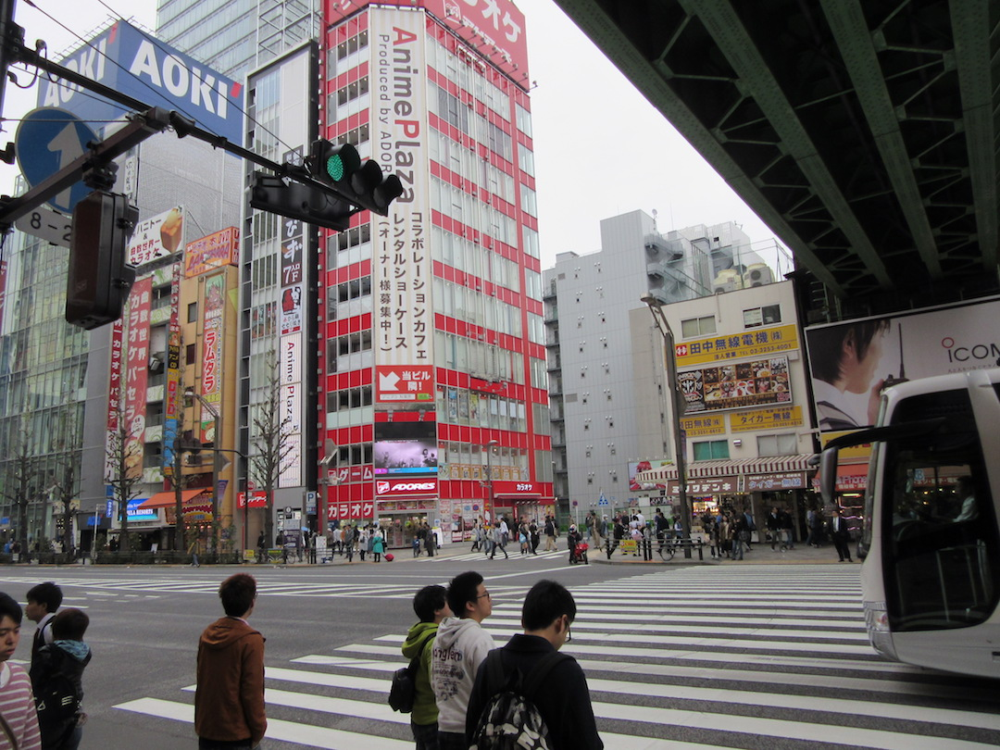

I was in Tokyo's famous electronics district, Akihabara, today. It has all sorts of interesting things, old video games, anime and manga, plenty of places to eat, all in all it's a fun place. Although, I do have a feeling that it would be more fun to go to with friends than it was to go alone. But what can you do, at least I had a good time on my own. The streets were very busy though, it looks a lot like New York with all the people you see walking around.
